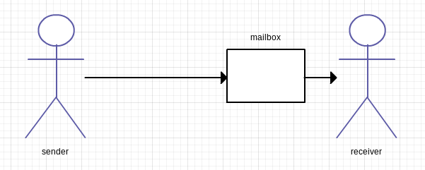

Akka
concurrency and parallelism
Andraž Bajt / @edofic
I'm a student. Programming in scala for a year. Doing some Akka stuff currently.
Threads
Good for OS/processor
Bad for programmer
Deadlocks, race conditions, synchronization
"Impossible" to get right
Lightweight processes. Time sharing. Need shared data = communicate through
side effects. BAD. There are books like "Java concurrency in practice". Who
read that?
Callbacks
Node.js is popular
Impure
Error handling
Unreadable
Been here since ever e.g. function pointers in C.
The Actor Model
Carl Hewitt 1973
Erricoson Erlang in 80s
Different take on OO

Picture says it all. There are lightweight actors that send messages to eachother.
Every actor has a mailbox. I processes one message at a time. Therefore single threaded.
EASY to reason about. Can wrap mutable state safely.
Sample
Defining actors
import akka.actor._
case class DoStuff(s: String)
class Worker extends Actor {
def receive = {
case DoStuff(s) => doStuff(s)
case msg: String => println(msg)
case 42 => sender ! "You'll need a bigger computer for that"
}
def doStuff(s: String) = ... //some blocking operation
}
Sample
Usage
import akka.actor._
import akka.pattern.ask
val sys = ActorSystem()
val worker = sys.actorOf(Props[Worker])
worker ! DoStuff("details")
worker ! "hello world"
val question: Future[Question] = worker ? 42
Routing
import akka.routing.RoundRobin
val worker = sys.actorOf(
Props[Worker] withRouter RoundRobin(5),
"myWorker"
)
Config
Exact same code!
akka.actor.deployment {
/myWorker {
router = random-router
nr-of-instances = 17
}
}
There is also router FromConfig. You can define your own.
Going remote
Just change the config
remote deploy
remote actor lookup
Cluster
cluster aware routers
no code changes
More info
See http://akka.io/
And there is plenty of documentation at